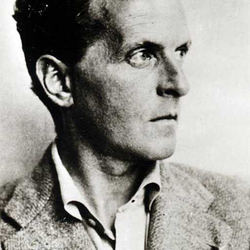

名字:
启文
性别:男

介绍:其实我是个好人
问题
答案
新建于:2015-12-16 11:14:12 AM，更新于2015-12-16 11:14:12 AM
正文: 第一的答案非常正确，我来补充关于像素块多出的部分。粗略看了一下，个人认为那不是属于魂斗罗动作sprite部分，应该是和裤子同用像素块，不属于sprite部分 这只是猜想 验证的话需扣图加上开双人模式验证 现在手上只有手机。你想验证可以这样做：开双人模式 先站里重合，然后一人趴下，看是否出现闪烁。得出答案告诉我，我也等着。